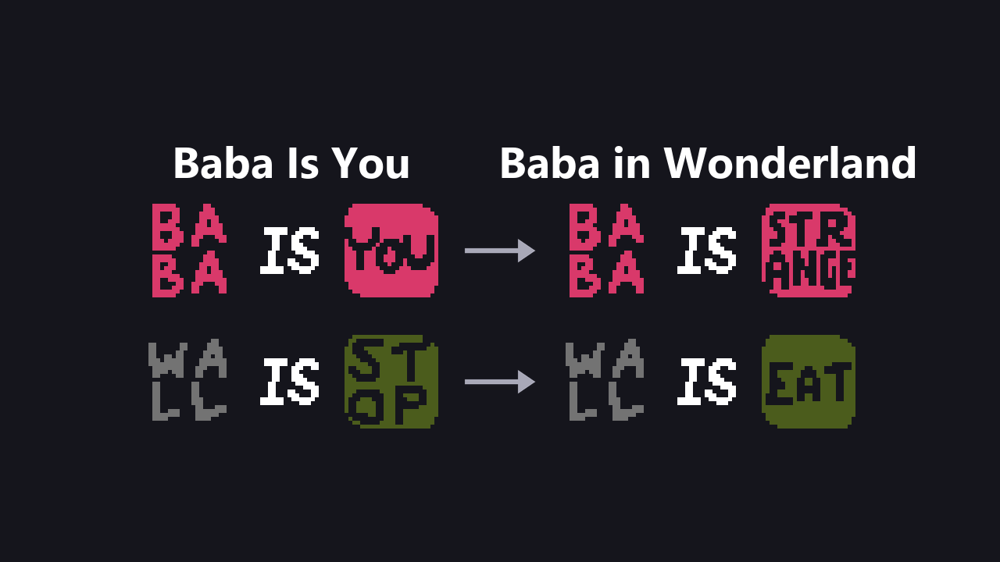
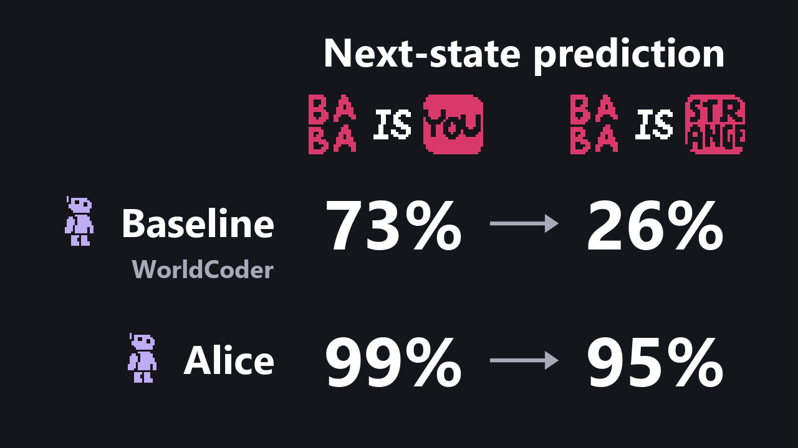

Same game, absurd words

Baba in Wonderland swaps the rule words of Baba Is You for unrelated ones. What they do has to be found by playing.
NeurIPS 2026
Online Self-Supervised Dynamics Discovery
for Executable World Models
1Korea University2Kyung Hee UniversityIIIXR Lab, South Korea

Baba in Wonderland swaps the rule words of Baba Is You for unrelated ones. What they do has to be found by playing.
Alice writes the rules as Python code that predicts the next state, and improves the code by playing.

Next-state prediction before and after the words change. Both use GPT-5.4; mean of 5 runs.
Alice plays and saves every move. Under WATER IS EAT, water stops Baba, so its code says: if water, stay.
Under WATER IS BEGIN, Baba and the water both vanish, but the code predicts Baba stops. A move the code gets wrong is a bug.
A language model sees the bug and the code, not the saved moves, and writes a fix that gets the bug right: if water, vanish.
The fix is checked on every saved move. Under WATER IS EAT it now predicts a vanish where Baba stays, so it is rejected.
The saved moves the rejected fix got wrong are kept as a group. The language model sees the bug with one of them, and its next fix gets both right: accepted.
Moves Alice has not tried yet are placed on a map of its saved moves. It tries the one farthest from what it has tried and most likely to land in its least-seen group: where its code is most likely still wrong.
How accurately the learned code predicts the next state (balanced accuracy for Baba Is You). Mean of 5 runs with GPT-5.4; lines show ± one standard deviation.
Saved versions of Alice's code from a run: one move, first predicted wrong, then right after a fix.
Preparing the comparison images…
Choose a map below. Solve it yourself or use Auto to replay a solution.
v021
0/ 300 steps
@article{seo2026baba,
title={Baba in Wonderland: Online Self-Supervised Dynamics Discovery for Executable World Models},
author={SeungWon Seo and DongHeun Han and SeongRae Noh and HyeongYeop Kang},
journal={arXiv preprint arXiv:2605.16725},
year={2026},
url={https://arxiv.org/abs/2605.16725}
}Questions about the paper or code? Get in touch ↗